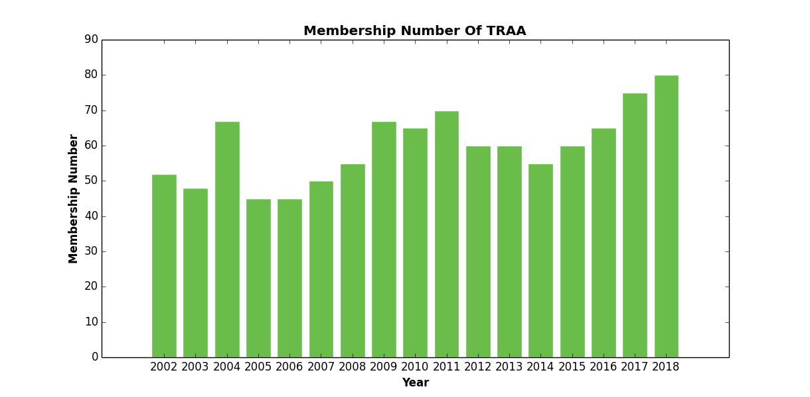

Header
About Us
Our story
In the spring of 1986 the TRAA was formed by anglers concerned with the state of the fishery in the Thames River watershed, particularly the dwindling smallmouth bass population in the North Thames River.
The TRAA is not a fishing club, although most members are anglers and share fishing as a common interest. We are a "hands on" environmental group who likes to work at a grass roots level.
The TRAA is a volunteer organization, governed by a formal constitution and by-laws. An elected Executive, with the guidence of the General Membership, sets the policies and direction for the TRAA.
The TRAA has a history of always having a core group of active members supported by those who just want to be part of the solution. Either way, every member of the TRAA is active in their advocacy for the health of the Thames River watershed and its inhbitants.
TRAA Membership Data

BE A TRAA MEMBER FOR A WHOLE YEAR FOR ONLY $25.00
adds another voice to our efforts in protecting and enhancing aquatic habitats in the London & area community.
TRAA Executives
President
Rob Huber
Vice President
Paul Holmes
Secretary
Jeremy Beaton
Treasurer
Randy Bailey
Chairperson
Adam Bengen
TRAA Volunteer Committee Chairs
Trout
Dan Schinkelshoek
Warmwater
Pud Hunter
Hatchery Management
Adam Bengen
Randy Bailey
Public Relations
Rob Huber
Randy Bailey
Paul Noble
Habitat
Jeremy Beaton
Paul Holmes
Randy Bailey